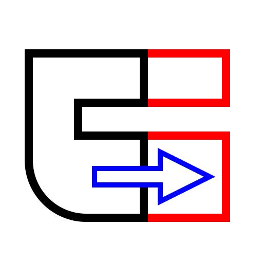
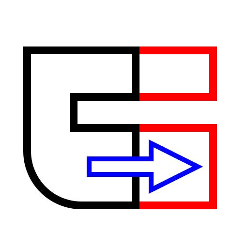
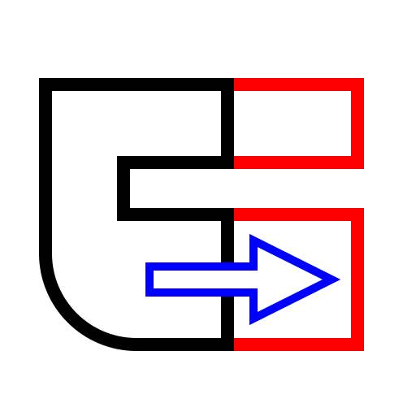
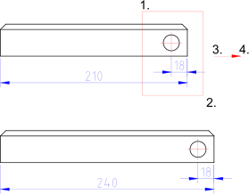

Menu: Modify > Stretch
Shortcut: S, S
Commands: stretch | ss

Description:
This tool stretches contours and dimension entities. This can also be
described as moving all endpoints within a given rectangular area.

Procedure: